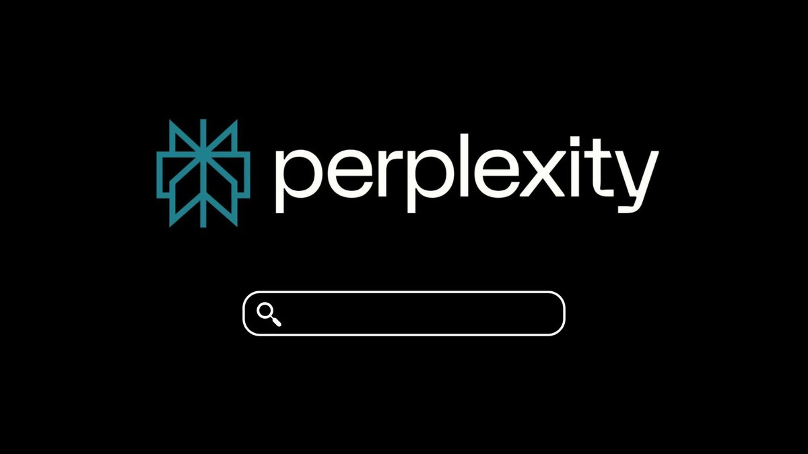

Descrição
O Perplexity AI é um mecanismo de busca inteligente que utiliza Inteligência Artificial para responder perguntas de forma contextualizada, citando as fontes de suas respostas. Isso torna a ferramenta muito útil para quem precisa fazer pesquisas rápidas e confiáveis, sem o risco de informações desatualizadas ou imprecisas.
Ah, e ele não apenas busca resultados na internet, mas os organiza e resume de forma objetiva.
Principais Planos e Valores
Plano Gratuito (Padrão): Gratuito.
Inclui pesquisas básicas ilimitadas e um uso muito limitado de pesquisas avançadas por dia.Perplexity Pro (Individual): US$ 20 por mês ou US$ 200 por ano (cerca de US$ 16,67/mês).
Oferece trocas de modelos de IA avançados, geração de imagens e maior limite de pesquisas profissionais.Education Pro: US$ 10 por mês.
Uma versão com 50% de desconto do plano Pro voltada para estudantes e educadores qualificados (com verificação via SheerID).